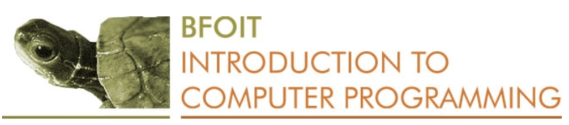

======= >>>>>>> 00b480fe774ee06e2cc0533bedd16c9def153948
Computers for Girls
On this page you will find links to resources that are on this computer so that no internet is needed. You will find more online resources here.
Potential & Growth
=======Potential and Growth
>>>>>>> 00b480fe774ee06e2cc0533bedd16c9def153948|
Global network of teachers and youth using the Internet to collaborate on projects to enhance learning and make a difference in the world. iEARN also offers training on using the internet for learning. The iEARN Project Book is found on this computer. Audience: 5-18 years old |
|
|
Girl Rising contains files and lesson plans. It provides teachers with a unique opportunity to educate students about the issues surrounding, and the impact of, girls' education in the developing world. Audience: 12-18 years old Click here to enter the site. | |

|
Through Their Eyes, In Their Voices is dedicated to identifying factors that contribute to girls' success in reaching higher education. Five women share their stories on the struggle to get education. Fatima's Story: Giving Girls the Chance to LearnThis unit is designed to raise awareness of the impact of gender inequality in education and how it can be overcome. It highlights the real life story of Fatna, a 14-year-old girl from Darfur who has escaped the conflict there and is now living in a refugee camp in Chad. <<<<<<< HEAD
Video What is poverty from a girl's perspective? Hearing directly from them, in their own words, provides unique insight and understanding of their issues. =======Girls Speak: a new voice in global development What is poverty from a girl's perspective? Hearing directly from them, in their own words, provides unique insight and understanding of their issues. >>>>>>> 00b480fe774ee06e2cc0533bedd16c9def153948Audience: 14-18 years old |
Science, Technology, Engineering & Math
=======Science, Technology, Engineering, and Math
>>>>>>> 00b480fe774ee06e2cc0533bedd16c9def153948Science
Technology
|  |
Write and test programs directly on the computer. Twenty-six lessons will guide you through program-writing. Start Introduction to Computer Programming here. Audience: 12-18 years old |
|
Khan Academy Computer Science provides 24 video lessons on learning Python, a programming language Audience: 14-18 years old |
|
|
Thinkersmith's goal is to help get creative computer science into the hands of all people at all age groups. Two of their classroom lessons are here:
<<<<<<< HEAD
Binary Baubles Audience: 8-16 years old |
|
 |
Computer Science in a Box: Unplug Your Curriculum introduces fundamental building blocks of computer science without using computers at all. Audience: 9-14 years old |
|
Ubuntu is the operating system on the computer that you are using. You can learn more about this system and learn how to better use this resource by reading the Ubuntu Manual Audience: 14-18 years old |
|
|
LibreOffice is a suite of everyday tools that are loaded on this computer. Learn more about using these tools by reading the following guides.
Getting Started with Libre Office Audience: 14-18 years old |
|
|
How does a computer work? How can I fix a broken computer? These questions and others are answered in the following bookslets
Computer Triage for Refurbishers contains guidelines for doing basic tests on computer components Audience: 14-18 years old |
Engineering
|
Engineering: an Introduction for High School Audience: 14-18 years old |
Math
|
Complete video courses in:
Arithmetic Audience: 8-18 years old |
|
|
By Grade:
Grade 6 Math Concepts
Algebra I
Basic Geometry Audience: 10-18 years old |
Health
|
Hesperian has written a number of helpful books that guide people who may not have easy access to doctors and other medical advice. To get the latest versions of these books online, click here Other books include:
Where There is No Doctor Audience: 14-18 years old |
|
| \ |
MedlinePlus is a medical reference for health and illness. Audience: 14-18 years old |
|
It's All One Curriculum offers content on almost any topic you might want to include in teaching young people about gender, sexual health, HIV, sexuality, relationships, communication, intimate-partner violence, puberty, reproduction, contraception, abortion, or advocating for their own rights. It is intentionally comprehensive so that you can seelct the content and activities that meet your needs.
Audience: 14-18 years old |